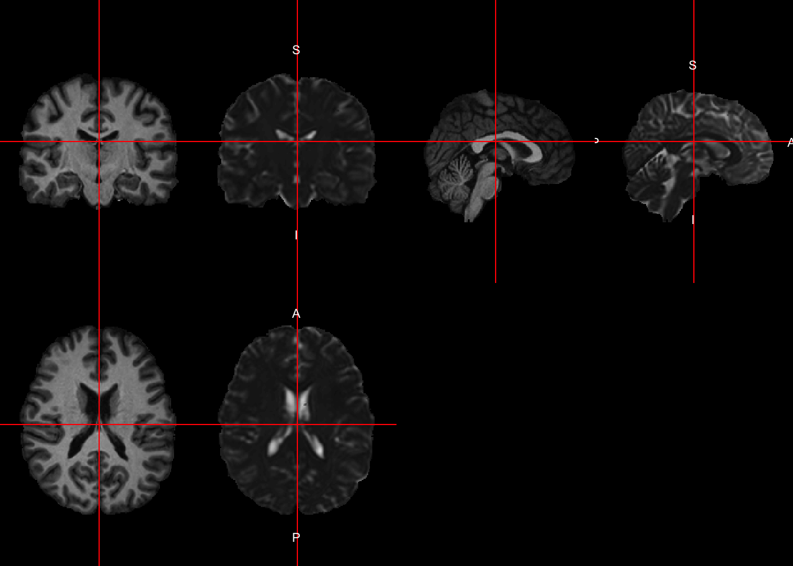
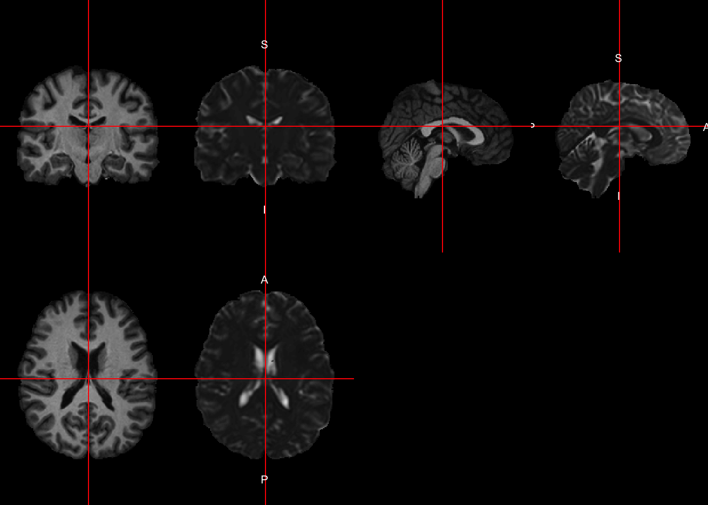
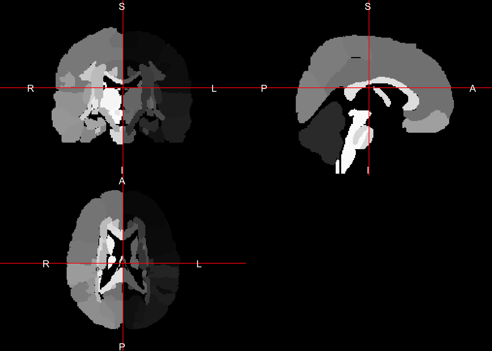
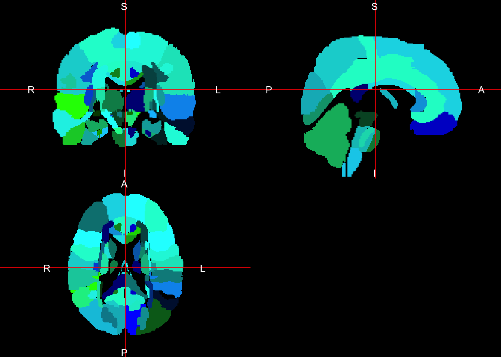
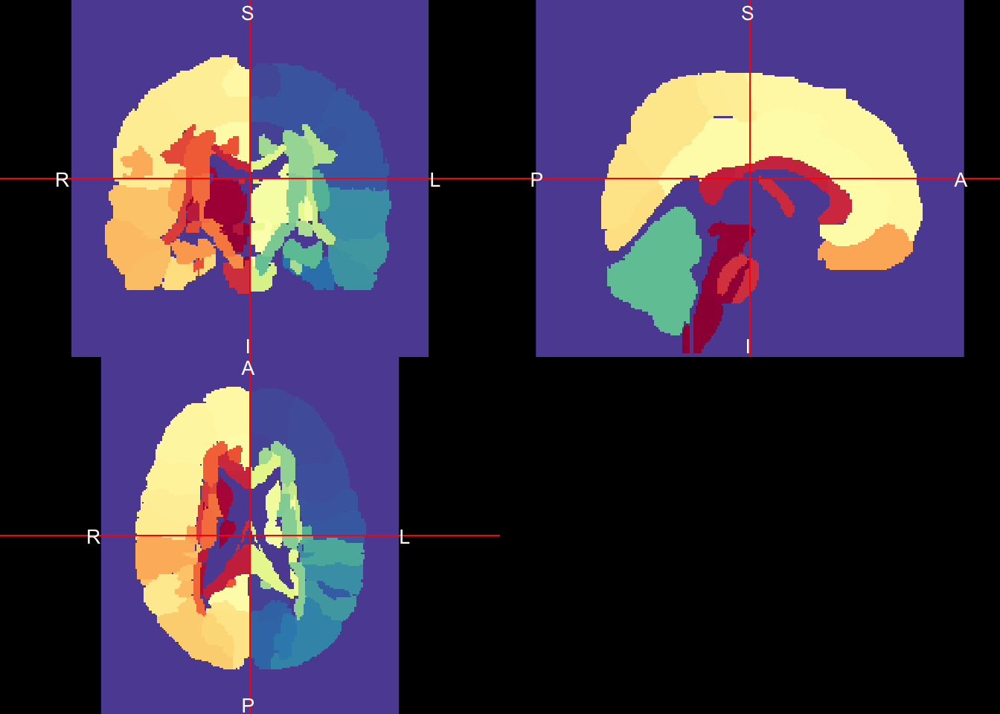
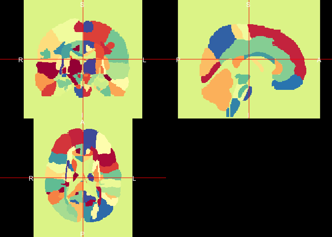
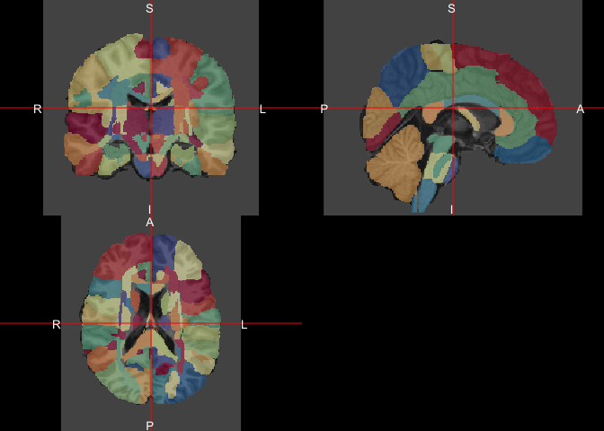
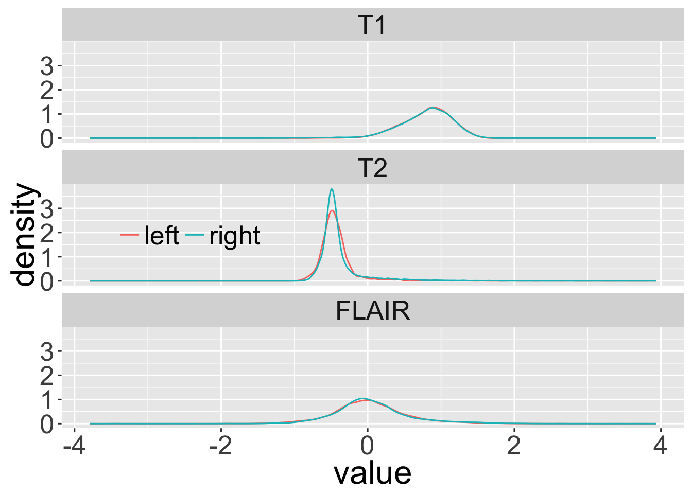
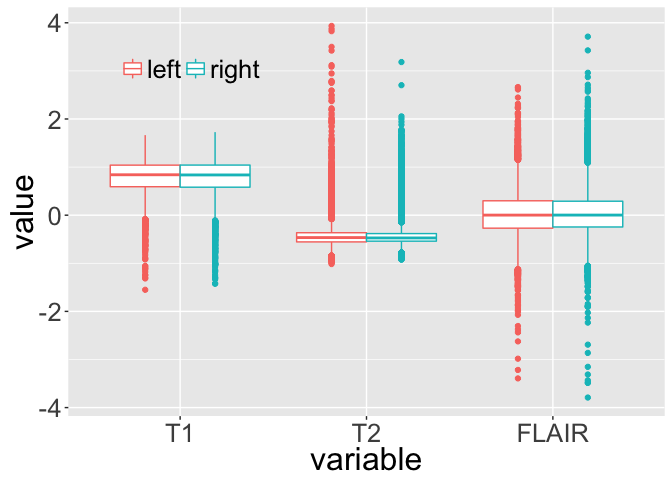

Labels in template space
In Processing Within-Visit MRI, we registered the T1 image to the Eve template using a non-linear registration (SyN) (Avants et al. 2008). Also, we applied this transformation to the intensity-normalized T1, T2, and FLAIR images, so that these image are located in the same space as the Eve atlases. We can overlay the atlases on these registered images and look at the average intensity of each structure for each imaging sequence.
Reading in registered images
Here we will be reading in those previous registered, intensity-normalized images.
library(neurobase)
mods = c("T1", "T2", "FLAIR")
norm_reg_files = file.path("..",
"preprocess_mri_within",
paste0("113-01-", mods, "_norm_eve.nii.gz")
)
names(norm_reg_files) = mods
norm_reg_imgs = lapply(norm_reg_files, readnii)Reading in Eve brain
Here we will read in the brain-extracted Eve T1 image, the brain mask, and then mask the normalized images with this mask.
library(EveTemplate)
eve_brain_fname = getEvePath("Brain")
eve_brain = readnii(eve_brain_fname)
eve_brain_mask = readEve(what = "Brain_Mask")
norm_reg_imgs = lapply(norm_reg_imgs, mask_img, mask = eve_brain_mask)We will plot the registered subject images against this to ensure they are in fact in the same space. (Remember to always look at your data!)
lapply(norm_reg_imgs, double_ortho, x = eve_brain) 

$T1
NULL
$T2
NULL
$FLAIR
NULLWe see good congruence from the template and the corresponding images from this patient.
Getting the Eve atlas and labels
Here we will read in one of the whole brain atlases of Eve, specifically the type 2 (“II”). Please see Oishi et al. (2009) and Oishi, Faria, and Mori (2010) for further discussion of the atlases. We will read in the atlas and show that it has a series of integer labels. These labels correspond to the integer_label column in the data.frame produced by getEveMapLabels.
eve_labels = readEveMap(type = "II")
unique_labs = eve_labels %>%
c %>%
unique %>%
sort
head(unique_labs)[1] 0 1 2 3 4 5lab_df = getEveMapLabels(type = "II")
head(unique(lab_df$integer_label))[1] 0 1 2 3 4 5all( unique_labs %in% lab_df$integer_label)[1] TRUEPlotting the labels
Let’s plot the labels to see how they look.
ortho2(eve_labels)
Although that shows us the breakdown of labels, the defaults in ortho2 are for grayscale images. Luckily, getEveMapLabels provides an rgb representation of a look up table (LUT) for colors for each structure. Let’s use that to plot the image:
cols = rgb(lab_df$color_r/255, lab_df$color_g,
lab_df$color_b, maxColorValue = 255)
breaks = unique_labs
ortho2(eve_labels, col = cols, breaks = c(-1, breaks))
Again, not that great, but a bit better. We can try our own palette as below:
library(RColorBrewer)
rf <- colorRampPalette(rev(brewer.pal(11,'Spectral')))
cols <- rf(length(unique_labs))
ortho2(eve_labels, col = cols, breaks = c(-1, breaks)) That may give us a good assortment of colors, where right is more red and blue is more left. We can randomize these colors, which may show better discrepancy by putting those with a blue hue close to those with red:
set.seed(20161008)
ortho2(eve_labels, col = sample(cols), breaks = c(-1, breaks))
We can overlay these colors on top of the subject’s T1 image:
set.seed(20161008)
ortho2(norm_reg_imgs$T1, eve_labels,
col.y = alpha(sample(cols), 0.5), ybreaks = c(-1, breaks))
Getting structure-specific metrics
Now that we have our normalized images in the template/atlas space, let’s get information about each imaging sequence. Here we will make a data.frame with all the voxels from each modality and the atlas. There are more elegant ways to do this, but we want to be explicit below:
df = data.frame(T1 = norm_reg_imgs$T1[ eve_brain_mask == 1],
T2 = norm_reg_imgs$T2[ eve_brain_mask == 1],
FLAIR = norm_reg_imgs$FLAIR[ eve_brain_mask == 1],
integer_label = eve_labels[ eve_brain_mask == 1]
)Now that we have a standard data.frame, we can use any data manipulation procedure just as we would in any other way. Let’s reshape the data:
library(reshape2)
library(dplyr)
long = reshape2::melt(df,
id.vars = "integer_label")
head(long) integer_label variable value
1 130 T1 0.000000000
2 130 T1 0.000000000
3 65 T1 -0.006485715
4 130 T1 0.000000000
5 130 T1 -0.033087343
6 130 T1 -0.046731040Now we can merge in the labels from the Eve template so that we can actually see what structures these voxels represent. We can drop the extraneous color columns as well.
long = left_join(long, lab_df, by = "integer_label")
long = long %>%
select(-color_r, -color_g, -color_b)Now we can calculate some statistics:
stats = long %>%
group_by(integer_label, text_label, right_left, structure, variable) %>%
summarise(mean = mean(value),
median = median(value),
sd = sd(value)) %>%
select(variable, text_label, mean, median, sd, everything()) %>%
ungroup
head(stats)# A tibble: 6 × 8
variable text_label mean median
<fctr> <chr> <dbl> <dbl>
1 T1 background -0.606879821 -0.69270784
2 T2 background 1.005639427 0.21436921
3 FLAIR background -0.660865609 -0.32353108
4 T1 superior_parietal_lobule_left 0.105027506 0.16597870
5 T2 superior_parietal_lobule_left 0.003699062 -0.38462870
6 FLAIR superior_parietal_lobule_left 0.037216124 0.03221552
# ... with 4 more variables: sd <dbl>, integer_label <dbl>,
# right_left <chr>, structure <chr>Thalamus statistics
Let’s look at the values corresponding to the thalamus:
library(stringr)
stats %>% filter(str_detect(structure, "thalamus")) %>%
select(text_label, variable, mean) %>%
arrange(variable, text_label)# A tibble: 6 × 3
text_label variable mean
<chr> <fctr> <dbl>
1 thalamus_left T1 0.80004855
2 thalamus_right T1 0.78460175
3 thalamus_left T2 -0.41903584
4 thalamus_right T2 -0.39373081
5 thalamus_left FLAIR 0.02892382
6 thalamus_right FLAIR 0.05632016Thalamus distribution
Here we see that the thalamus has pretty consistent means for the left and the right across sequence. But what about the distrubtion of all voxels in the thalamus?
Here I’m going to define a helper function for a ggplot2 plot, which makes legends transparent:
transparent_legend = theme(
legend.background = element_rect(
fill = "transparent"),
legend.key = element_rect(fill =
"transparent",
color = "transparent")
)Let’s go back to the data.frame long and plot the distribution of values for each sequence separated by left and right for the thamalus:
long %>% filter(str_detect(structure, "thalamus")) %>%
ggplot(aes(x = value, colour = factor(right_left))) +
geom_line(stat = "density") + facet_wrap(~variable, ncol = 1) +
theme(legend.position = c(0.2, 0.5),
legend.direction = "horizontal",
text = element_text(size = 24)) +
guides(colour = guide_legend(title = NULL)) +
transparent_legend
We can do similar things with boxplots:
long %>% filter(str_detect(structure, "thalamus")) %>%
ggplot(aes(x = variable, y = value, colour = factor(right_left))) +
geom_boxplot() +
theme(legend.position = c(0.2, 0.85),
legend.direction = "horizontal",
text = element_text(size = 24)) +
guides(colour = guide_legend(title = NULL)) +
transparent_legend